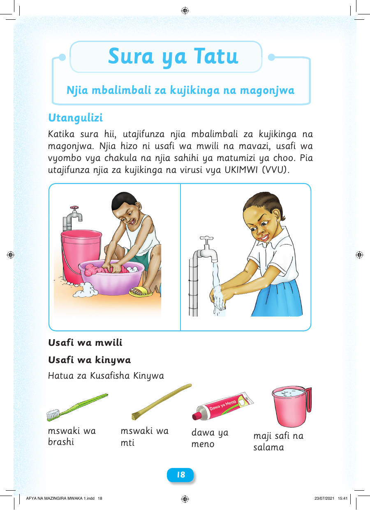

Sura ya Tatu Njia mbalimbali za kujikinga na magonjwa Utangulizi Katika sura hii, utajifunza njia mbalimbali za kujikinga na magonjwa. Njia hizo ni usafi wa mwili na mavazi, usafi wa vyombo vya chakula na njia sahihi ya matumizi ya choo. Pia utajifunza njia za kujikinga na virusi vya UKIMWI (VVU). Usafi wa mwili Usafi wa kinywa Hatua za Kusafisha Kinywa mswaki wa mswaki wa dawa ya maji safi na brashi mti meno salama 18 AFYA NA MAZINGIRA MWAKA 1.indd 18 23/07/2021 15:41